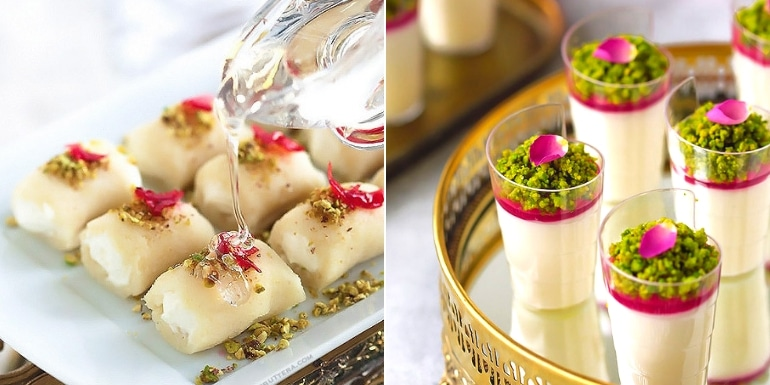
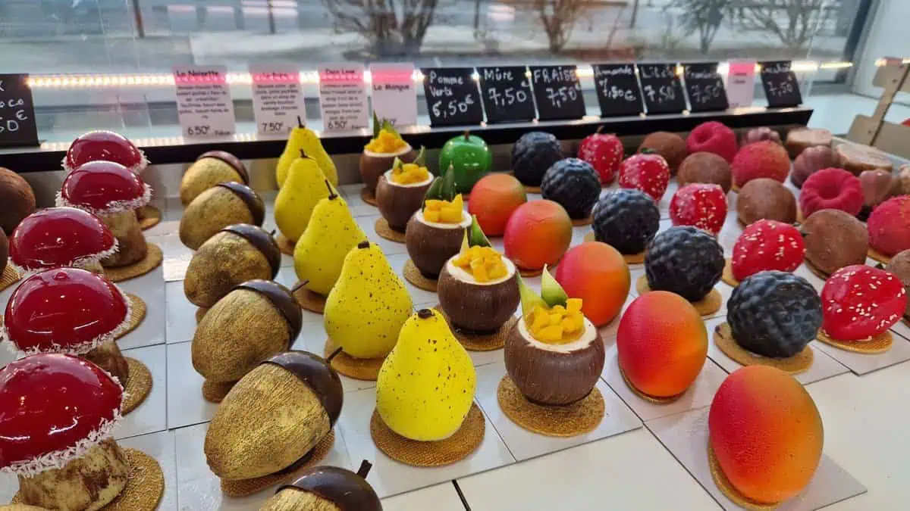
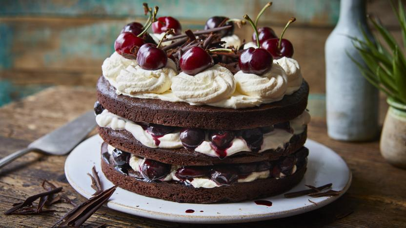

DESSERTS
INTRODUCTION
Dessert is a course that concludes a meal; the course consists of sweet foods, such as cake, biscuit, ice cream, and possibly a beverage, such as dessert wine or liqueur. Some cultures sweeten foods that are more commonly savory to create desserts. In some parts of the world, there is no tradition of a dessert course to conclude a meal. Historically, the dessert course consisted entirely of foods 'from the storeroom' (de l'office), including fresh, stewed, preserved, and dried fruits; nuts; cheese and other dairy dishes; dry biscuits (cookies) and wafers; and ices and ice creams.[1] Sweet dishes from the kitchen, such as freshly prepared pastries, meringues, custards, puddings, and baked fruits, were served in the entremets course, not in the dessert course. By the 20th century, though, sweet entremets had come to be included among the desserts.[2][3] The modern term dessert can apply to many sweets, including fruit, custards, gelatins, puddings, biscuits, cookies, macaroons, pastries, pies, tarts, cakes, ice creams, and sweet soups.

ETYMOLOGY
The term "dessert" originated from the French word desservir, meaning "to clear the table",[a] and it referred to the final course of the meal, presented after the table was "cleared" (deservi). One of the earliest uses of the term in a culinary context is in the Ménagier de Paris (1393), which includes a course of "desserte" in three of the menus,[b] one of which includes sweet pastries and fruits, another of which includes savory frumenty and venison. In later centuries, the term continued to refer to the last course of the meal. In the late 19th century, the word "desserts" also came to refer to the dishes served in the dessert course.[4]
HISTORY
Sweets were fed to the gods in ancient Mesopotamia and ancient India[7] and other ancient civilizations.[8] Herodotus mentions that Persian meals featured many desserts, and were more varied in their sweet offerings than the main dishes.[9][10] German army officer Helmuth von Moltke whilst serving in the Ottoman Empire noted the unusual presentation of courses with the sweet courses served between roasts and other savory dishes.[11] Dried fruit and honey were probably the first sweeteners used in most of the world, but the spread of sugarcane around the world was essential to the development of dessert.[12] Sugarcane was grown and refined in India before 500 BC[13] and was crystallized, making it easy to transport, by AD 500. Sugar and sugarcane were traded, making sugar available to Macedonia by 303 BC and China by AD 600. In the Indian subcontinent, the Middle East, and China, sugar has been a staple of cooking and desserts for over a thousand years. Sugarcane and sugar were little known and rare in Europe until the twelfth century or later when the Crusades and then colonization spread its use. Europeans began to manufacture sugar in the Middle Ages, and more sweet desserts became available.[14] Even then sugar was so expensive usually only the wealthy could indulge on special occasions. The first apple pie recipe was published in 1381;[15] The earliest documentation of the term cupcake was in "Seventy-five Receipts for Pastry, Cakes, and Sweetmeats" in 1828 in Eliza Leslie's Receipts cookbook.[16] The Industrial Revolution in Europe and later America led to the mass-production of foodstuffs, including desserts, that could be processed, preserved, canned, and packaged. Frozen foods, including desserts, became very popular starting in the 1920s.[17]
INGREDIENTS
Sweet desserts usually contain cane sugar, palm sugar, brown sugar, honey, or some types of syrup such as molasses, maple syrup, treacle, or corn syrup. Other common ingredients in Western-style desserts are flour or other starches, cooking fats such as butter or lard, dairy, eggs, salt, acidic ingredients such as lemon juice, and spices and other flavoring agents such as chocolate, coffee, peanut butter, fruits, and nuts. The proportions of these ingredients, along with the preparation methods, play a major part in the consistency, texture, and flavor of the end product. Sugars contribute moisture and tenderness to baked goods. Flour or starch components serves as a protein and gives the dessert structure. Fats contribute moisture and can enable the development of flaky layers in pastries and pie crusts. The dairy products in baked goods keep the desserts moist. Many desserts also contain eggs, in order to form custard or to aid in the rising and thickening of a cake-like substance. Egg yolks specifically contribute to the richness of desserts. Egg whites can act as a leavening agent[18] or provide structure. Further innovation in the healthy eating movement has led to more information being available about vegan and gluten-free substitutes for the standard ingredients, as well as replacements for refined sugar. Desserts can contain many spices and extracts to add a variety of flavors. Salt and acids are added to desserts to balance sweet flavors and create a contrast in flavors. Some desserts are coffee-flavored, for example an iced coffee soufflé or coffee biscuits.[19] Alcohols and liqueurs can also be used as an ingredient, to make alcoholic desserts.[20]
